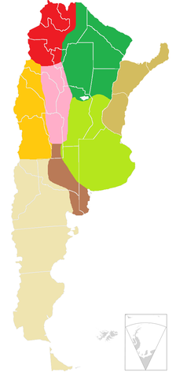

Argentina desglosada
Un poco de info
Argentina, oficialmente República Argentina, es un país soberano de América del Sur, ubicado en el extremo sur y sudeste de dicho subcontinente. Adopta la forma de gobierno republicana, democrática, representativa y federal. La Argentina está organizada como un Estado federal descentralizado, integrado desde 1994 por veintitrés Provincias y una Ciudad Autónoma (CABA), esta última designada como capital federal del país. Las 24 jurisdicciones o distritos autogobernados tienen constitución, bandera y fuerza de seguridad propios. Las 23 provincias mantienen todos los poderes no delegados al Estado nacional, tienen tres poderes autónomos y garantizan la autonomía de sus municipios. Integra el Mercosur —bloque del que fue fundador en 1991—, la Comunidad de Estados Latinoamericanos y Caribeños (CELAC) y la Organización de Estados Americanos (OEA) Su población, según el censo de 2022 es de 47.327.407 habitantes. Su superficie es de 2.780.400 km2
Bandera y Escudo de Argentina

Listado de Regiones
Las regiones geográficas de Argentina son cada una de las grandes divisiones territoriales, definidas por características geográficas e histórico-sociales en las que se divide la nación sudamericana.
- Región Pampeana
- Región de Cuyo
- Región Noroeste
- Patagonia
- Región Noreste
- Región Chaqueña
- Mesopotamia
- Región de Cuyo